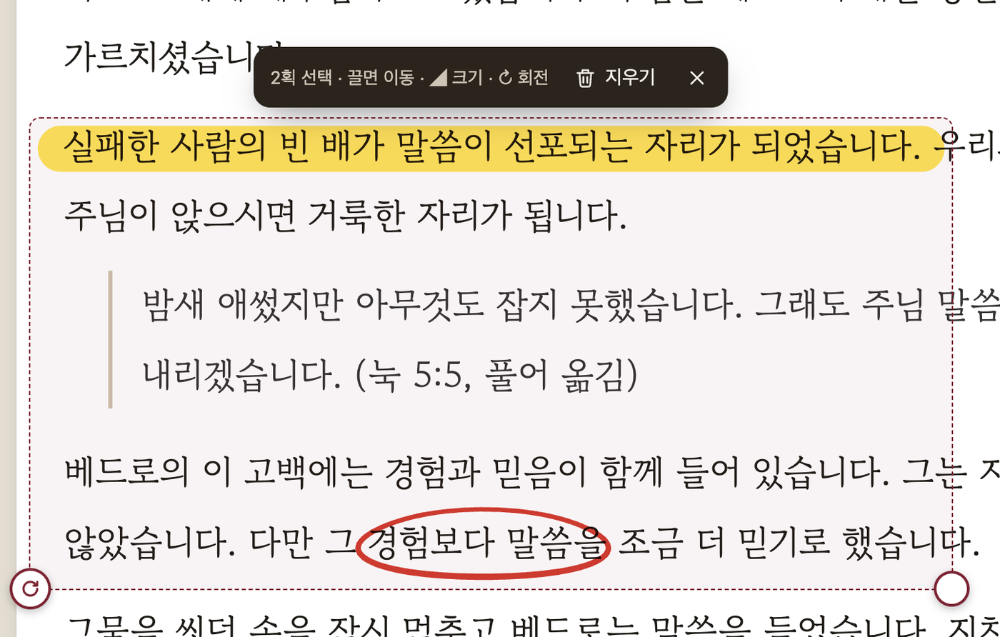

강단노트 사용 설명서
설교 원고를 읽고, 표시하고, 강단으로.
강단노트는 설교를 준비하는 책상에서, 그리고 말씀을 전하는 강단에서 함께하는 아이패드 원고 리더입니다. 이 설명서도 원고처럼 열려 있으니, 읽으면서 애플펜슬로 마음껏 써 보세요.
1원고 불러오기5강단에서 설교하기
2애플펜슬로 준비하기6원고 정리와 백업
3필기 옮기기 · 크기 · 회전7연습해 보기
4읽기 편하게
1원고 불러오기
강단노트는 PDF 원고를 엽니다. PDF에는 원고를 쓸 때 고른 글꼴이 그대로 담겨, 어느 기기에서 열어도 쓰신 모양 그대로 보입니다.
- 서재 오른쪽 위 원고 불러오기 → 파일 앱에서 PDF를 고릅니다. 여러 개를 한 번에 골라도 됩니다.
- 파일 앱 · 메일 · 구글 드라이브 앱에서 PDF를 공유 → 강단노트로 보내도 바로 들어옵니다.
- 파일 이름을 ‘260921 주일예배 설교 - 제목’처럼 지으면 날짜 · 예배 · 제목이 나뉘어 정리됩니다.
원고를 PDF로 만드는 법 — 한글: 파일 → PDF로 저장하기 · 워드: 다른 이름으로 저장 → PDF · Pages: 내보내기 → PDF · 구글 문서: 다운로드 → PDF 문서
 서재 — 최근 연 순, 설교 날짜 순으로 볼 수 있어요. 카드의 ‘필기 N쪽’은 필기가 있는 쪽 수예요.
서재 — 최근 연 순, 설교 날짜 순으로 볼 수 있어요. 카드의 ‘필기 N쪽’은 필기가 있는 쪽 수예요.
2애플펜슬로 준비하기
원고를 열면 준비 화면입니다. 아래쪽 도구 막대에서 도구를 고르고 펜슬로 씁니다. 손가락은 화면을 넘기는 데만 쓰이니, 쓰는 동안 손바닥이 닿아도 괜찮습니다.
 왼쪽부터 선택(올가미) · 펜 · 형광펜 · 지우개 · 색 · 굵기 · 되돌리기 · 다시하기 · 손가락 쓰기
왼쪽부터 선택(올가미) · 펜 · 형광펜 · 지우개 · 색 · 굵기 · 되돌리기 · 다시하기 · 손가락 쓰기
- 펜은 누르는 힘에 따라 굵기가 조금씩 달라집니다. 색은 네 가지 가운데서 고릅니다.
- 형광펜을 대충 곧게 그어도 반듯한 줄로 정리되고, 아래 글씨는 가려지지 않습니다.
- 지우개는 두 가지입니다. 부분은 연필 지우개처럼 지나간 자리만, 획 전체는 닿은 획을 한 번에 지웁니다.
- 굵기 버튼을 누르면 슬라이더와 −/+ 버튼이 나오고, 굵기를 pt(포인트) 숫자로 보여 줍니다.
- 펜슬이 없다면 손 모양 버튼을 켜고 손가락으로 씁니다(이때 화면 넘기기는 두 손가락).
 준비 화면 — 밑줄 · 형광펜 · 동그라미 · 쉼 표시
준비 화면 — 밑줄 · 형광펜 · 동그라미 · 쉼 표시
 굵기 — pt 숫자와 실제 크기 미리보기
굵기 — pt 숫자와 실제 크기 미리보기
3필기 옮기기 · 크기 · 회전
도구 막대 맨 왼쪽 선택(올가미)으로 필기를 둘러싸면 그 필기가 선택됩니다. 한 획만 고를 때는 그 획을 톡 누르세요.
- 옮기기 — 선택 상자를 펜슬이나 손가락으로 끌어 옮깁니다.
- 크기 — 오른쪽 아래 동그란 손잡이를 끌면 커지고 작아집니다. 선 굵기도 함께 바뀝니다.
- 회전 — 왼쪽 아래 ↻ 손잡이를 돌리면 가운데를 축으로 돌아갑니다. 0° · 90° · 180°에서 살짝 달라붙습니다.
- 지우기 — 위에 뜨는 막대에서 지우기를 누릅니다. 잘못했다면 되돌리기로 살릴 수 있습니다.

선택한 필기 — 위쪽 막대와 두 손잡이(오른쪽 아래 크기 · 왼쪽 아래 회전 ↻)
4읽기 편하게
- 확대 · 축소 — 두 손가락으로 벌리고 오므립니다. 메뉴(⋯)의 −/+ 와 ‘맞춤’으로도 됩니다. 100%보다 크게 보면 옆으로도 움직일 수 있습니다.
- 여백 줄여 크게 보기 — 원고의 바깥 여백을 자동으로 줄여 글씨가 더 크게 보입니다(메뉴에서 끄고 켬).
- 쪽 미리보기 — 위쪽 막대의 목록 버튼을 누르면 왼쪽에 쪽 목록이 열리고 닫힙니다. 필기도 함께 보이고, 누르면 그 쪽으로 갑니다.
- 화면 색 — 메뉴에서 밝게 · 종이 · 어둡게를 고릅니다. 아이패드를 가로로 돌리면 글씨가 더 커집니다.
 쪽 미리보기
쪽 미리보기5강단에서 설교하기
오른쪽 위 강단을 누르면 설교할 때 쓰는 화면이 됩니다. 준비 · 강단 버튼은 두 화면에서 늘 같은 자리에 있습니다.
 쪽 번호 · 지금 시각 · 설교 타이머 · 타이머 설정 · 화면 색 · 화면 꺼짐 방지 · 준비/강단 · 메뉴
쪽 번호 · 지금 시각 · 설교 타이머 · 타이머 설정 · 화면 색 · 화면 꺼짐 방지 · 준비/강단 · 메뉴
- 넘기기 — 화면 오른쪽을 탭하면 다음 화면, 왼쪽을 탭하면 이전 화면입니다. 펜슬로 탭해도 넘어갑니다.
- 이어 읽을 자리 — 넘길 때 앞 화면의 마지막 몇 줄을 남기고, 이어 읽을 자리에 금색 줄이 잠깐 나타납니다.
- 강단에서 필기 — 설교 중 실수로 그어지지 않도록 강단에서는 필기가 꺼져 있습니다. 필요하면 메뉴의 ‘강단에서도 펜슬로 필기’를 켜세요.
- 화면 꺼짐 방지 — 강단 화면에서는 아이패드 화면이 저절로 꺼지지 않습니다(초록 자물쇠).
- 페달 — 블루투스 페이지 넘김 페달로도 넘길 수 있습니다.
 금색 줄 = 이어 읽을 자리
금색 줄 = 이어 읽을 자리설교 타이머
 타이머 설정 — 분 단위로 정하기
타이머 설정 — 분 단위로 정하기
시계 모양의 타이머 설정 버튼에서 설교 시간을 분 단위로 정하면, 그 시간에서 거꾸로 셉니다. 위쪽 시간을 탭하면 시작 · 멈춤, 리셋은 정한 시간으로 되돌립니다.
대기진행막바지(80%)넘음
시간이 지나면 빨간색으로 +분:초 넘음을 보여 주고, 위쪽 막대 아래 줄도 함께 차오릅니다.
6원고 정리와 백업
- 여러 원고 지우기 — 서재의 원고 선택(또는 카드를 길게 누르기) → 원고를 탭해 고르고 아래 막대에서 지웁니다. ‘지난 설교 N편’은 파일 이름 날짜가 오늘보다 앞선 원고를 한 번에 고릅니다.
- 필기 포함 PDF 내보내기 — 원고 화면 메뉴(⋯)에서 누르면 필기가 들어간 PDF를 파일 앱 · 메일 · 드라이브로 보낼 수 있습니다.
- 백업 만들기 · 백업에서 복원 — 서재 오른쪽 위 설정(톱니바퀴)에서. 기기를 바꾸기 전에 백업 파일을 iCloud Drive나 구글 드라이브에 보관하세요.
 원고 선택 — 여러 편 한 번에 지우기
원고 선택 — 여러 편 한 번에 지우기
 설정 — 백업 · 도움말 · 문의
설정 — 백업 · 도움말 · 문의
원고는 이 아이패드 안에만 — 강단노트에는 회원 가입도, 로그인도 없습니다. 원고와 필기는 이 기기 안에만 저장되고 어떤 서버로도 보내지 않습니다. 인터넷이 없는 예배당에서도 그대로 동작합니다.
7연습해 보기
① 애플펜슬로 이 문장 아래에 밑줄을 그어 보세요. 펜슬로는 글씨가 써지고, 손가락으로는 화면이 넘어갑니다.
② 아래 문장에 형광펜을 대충 곧게 그어 보세요. 반듯한 줄로 정리됩니다.
주님은 나의 목자이시기에, 오늘 우리가 걷는 길도 이미 알고 계십니다.
③ 위에 그은 밑줄의 가운데만 부분 지우개로 지워 보세요.
④ 선택 도구로 형광펜을 둘러싸 고른 뒤, 끌어서 옮기고, 오른쪽 아래 손잡이로 키우고, ↻ 손잡이로 돌려 보세요.
⑤ 두 손가락으로 벌려 크게 보고, 메뉴의 ‘맞춤’으로 돌아와 보세요.
⑥ 오른쪽 위 ‘강단’을 누르고 화면 오른쪽을 탭해 넘겨 보세요. 타이머 설정 버튼에서 5분을 고르고 시간을 탭하면 타이머가 버건디색으로 돌아갑니다.
좋은 설교는 책상에서 한 번, 강단에서 또 한 번 완성됩니다. 책상에서는 원고를 고치고 표시하며 준비하고, 강단에서는 그 표시를 따라 말씀을 전합니다.
문의 lovewords10@gmail.com · © 2026 Yeol Studio
준비하는 책상에서도, 말씀을 전하는 강단에서도 늘 곁에 있겠습니다.